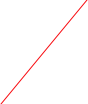

Motor


The stepper motor object was developed to be used with the M321 M-module but can be used with any stepper motor controller that follows the proper protocols. So far the M321 object is the only ORCA object that does follow those protocol.
Two M321 connections on the M-Carrier board. Motor A is on top, Motor B is on bottom. Note that if the M321 is jumpered for four-phase operation, only one connector will appear.
Manually increment or decrement the motor position by 1,10,100, or 1000 steps
An Example Motor connection setup

These connector are for chaining motor together to execute patterns.
Double-clicking on a motor will bring up the motor dialog. The motor dialog has three tabs, Run Ops, Manual Ops, and Profile/Patterns.

Set the motor name. The default is just ‘Stepper’


If checked, the motor will start a pattern run when the data run starts and stop if the run is stopped.
If checked, the data run will be stopped when the pattern is finished.

If checked, motor position records will be inserted in the data stream whenever the motor stops at a delta position.
Start (stop) the current pattern. If the ‘Sync/W run’ option is selected, this button will be greyed out.
An indication of where the motor is in its pattern range
Move the motor to an absolute or relative position, based on the mode selected in the popup

Set the stop counter without causing the motor to move
Set the step mode and the hold current reduction factor

Ask the motor controller for the current step count
Max amount the motor will move when trying to seek the home limit switch and whether it’s looking for the rising edge or falling edge
Start a seek for the limit switch. Read the switch state.
The current motor position
An absolute or relative position at which the controller will raise a breakpoint flag

Back & forth option will run the pattern backwards (from end to start) on even numbered sweeps. The raster option will just return to the start position after reaching the end position on each sweep.

Pattern file option. If used the motor positions used in the pattern will come from the selected file
How long to wait at each delta position

The motor starts at the rise frequency, then ramps to the drive frequency at the accel rate. The reverse happens as the motor approaches its final position.
Motor Patterns and Linking Motors
When running a motor pattern, motors can be chained together, i.e. for an x-y type scanning motion. Once the patterns are defined in the 'Profile/Patterns dialog the motors can be linked on the configuration page thus:
Pattern output control
The motor on the left becomes the master pattern controller and is the slowest pattern to be cycled. The motor on the right will finish each of its pattern sweeps for every one delta step of the left motor. More than two motors may be chained in this way.
Motor Pattern Files
It is possible to use a file to define a sweep pattern if non-uniform delta steps are desired. The format of the file is like this:
4
100,1.0
150,1.0
200,1.0
50,0.5
...
...
1000,1.0
The first entry is the number of times the pattern will be run before finishing. The rest of the file contains comma separated number pairs that define the absolute motor position to move to and the time in seconds to dwell at that position.
Motor Data Records
If the 'Ship Position' option is selected, then a motor activity record will be inserted into the data stream at various stages during the pattern run. The record is four 32-bit words long and has the following format:
xxxx xxxx xxxx xxxx xxxx xxxx xxxx xxxx- word 1
^^^^ ^^^^ ^^^^ ^^----------------------- the data ID
^^ ^^^^ ^^^^ ^^^^ ^^^^- the length (always 4)
xxxx xxxx xxxx xxxx xxxx xxxx xxxx xxxx- word2 unix ut time
xxxx xxxx xxxx xxxx xxxx xxxx xxxx xxxx- word3
^^^^------------------------------------ crate number
^^^^ ^----------------------------- M-Carrier Vme slot number
^^^-------------------------- Motor controller M-module slot
^^----------------------- Motor number
^^^^---------------- Motor state (see below)
xxxx xxxx xxxx xxxx xxxx xxxx xxxx xxxx- word 4 motor position
The motor state in word 3 has the following meaning:
0 pattern is starting
1 moving to start position
2 motor is moving
3 at delta position. Motor will start dwell cycle if dwell time is non-zero.
4 at end of sweep
5 a delta step is done
Notice that not all of these states are inserted in the data stream at this time. You will only see states 0, 1, 3, 4, and 5. The other states are internal and do not cause a record to be shipped. Note also that state 5 will not be shipped if the dwell time is zero.


Pattern input control